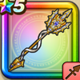

マスタードラゴンのやり
攻略班 7.0点 / あしばらいうけながしのかまえしんくうは黄金の息吹天空竜の裁き天空竜の鏡
くわしい特徴
【レベル別習得スキル】 Lv1【パラディン】守備力+10 Lv1【海賊】さいだいHP+10 Lv1あしばらい（消費MP：4）敵1体に威力120%の体技ダメージを与えたまに転ばせる Lv10うけながしのかまえ（消費MP：18）1ターンの間に1度だけ物理攻撃をランダムな敵に跳ね返す Lv15しんくうは（消費MP：9）体術で大気を切り裂き、敵全体に120%のバギ属性体技ダメージを与える Lv20黄金の息吹（消費MP：28）黄金に輝く息吹で敵全体にイオ属性のブレス大ダメージを与える Lv30天空竜の裁き（消費MP：31）敵1体に威力470％のバギ属性斬撃ダメージを与える。自身のHPが半分以下の時、威力が520％になる Lv35ゾンビ系へのダメージ+5% Lv40ドラゴン系へのダメージ+5% Lv45攻撃力+12 Lv50天空竜の鏡（消費MP：4）戦闘開始時に自動で光の壁を作り出し、2ターンの間、自分が受けた呪文を1回だけ敵に跳ね返す 【限界突破スキル】 1凸スキルの斬撃・体技・ブレスダメージ+5% 2凸スキルの斬撃・体技・ブレスダメージ+5% 3凸スキルの斬撃・体技・ブレスダメージ+5% 4凸スキルの斬撃・体技・ブレスダメージ+5%